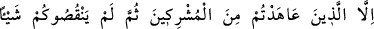
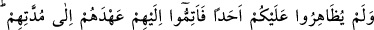

4. Ancak andlaşma yaptığınız müşriklerden (andlaşma şartlarından) hiçbir şeyi
eksik bırakmayan ve size karşı hiç kimseye arka çıkmayanların andlaşmalarını,
kendilerine tanıdığınız süreye kadar tamamlayın. Şüphesiz Allah müttakîleri sever.
“Ancak andlaşma yaptığınız müşriklerden” aradan müddet geçmekle birlikte
sözlerinde durduklarına delâlet etmek üzere andlaşma şartlarından “hiçbir şeyi eksik
bırakmayan”, verdikleri sözden dönmeyen…
Kâşifî der ki: Onlar sizin ahitlerinizden bir şey eksiltmediler, yani sizin ahdinizi
bozmadılar.
“ve size karşı” düşmanlarınızdan “hiç kimseye arka çıkmayanların andlaşmalarını
kendilerine tanıdığınız süreye kadar tamamlayın.” Ahidlerini bozan müşriklere dört
ay süre tanınırken ahidlerine sadakat gösterenlere dört ay gibi bir süreyle sınır
konulmamış, verilen ahde riayet edilmesi istenmiştir. Yâni andlaşmayı bozanlara
tanınan süre geçince onlara ansızın savaş açmayın. Onları diğerleriyle bir tutmayın.
Nitekim Hz. Peygamber (a.s.) ile andlaşma halinde olan Huzâa kabilesine
Bekroğulları kabilesi saldırmış Kureyş kabilesi de saldıranlara silah yardımında
bulunarak dolaylı olarak müslümanların düşmanlarına arka çıkmışlardı.
Rivayete göre Rasûlullah (s.a.) Efendimiz Hudeybiye yılında Beyt-i Şerif’in yanında
Kinane kabilesinin bir boyu olan Damreoğulları ile bir andlaşma yapmıştı. Bu sûre
nâzil olup tebliğ edildiğinde andlaşma süresinin bitmesine daha dokuz ay vardı.
(Ahidlerini bozmadıkları için) Efendimiz (s.a.) bu süre içinde kendilerine
dokunmamıştır.
“Şüphesiz Allah müttakîleri sever.” Bu bölüm Allah’ın emrine uymanın gerekliliğini
ifade ettiği gibi andlaşma şartlarına riayet etmenin de takva cümlesinden olduğuna işaret
etmektedir. Müşrik de olsa ahdine riâyet eden fedakar ile etmeyen gaddarı eşit tutmanın
takvâya uymadığına dikkat çekilmektedir.
Hâfız der ki:
Ahde vefayı öğrenirsen, güzel bir şeydir
Yoksa gördüğün herkes, ahde vefasızlığı bilir
Şeyh Nasrâbâdî de şöyle der: “Muttakînin (takvâ ehlinin) alameti dörttür:
1. Hadleri (Allah ve Rasûlü’nün koyduğu sınırları) muhafaza etmek,
2. (Hak yolda) var gücü ile çalışmak,
3. Ahidlere sadakat göstermek,
4. Var olana kanâat etmek.